Subscale wind tunnel and CFD study
I built a 3D printed wind tunnel with servo controlled angle of attack, then used CFD to test a Clark Y airfoil inside it and in free air. The result surprised me. My own tunnel’s walls were hiding the airfoil’s stall, cutting lift at low angles and squeezing the flow to inflate it at high angles, and I measured exactly how much.
My role
Everything. Sizing, CAD, printing, wiring, CFD setup, and the MATLAB analysis.
- Test section
- 5 × 5 in
- Contraction
- 2.56 : 1
- Airspeed
- 2.3 m/s
- Reynolds no.
- ≈ 6,200
- CFD cases
- 10
- Free air CL,max
- 0.87
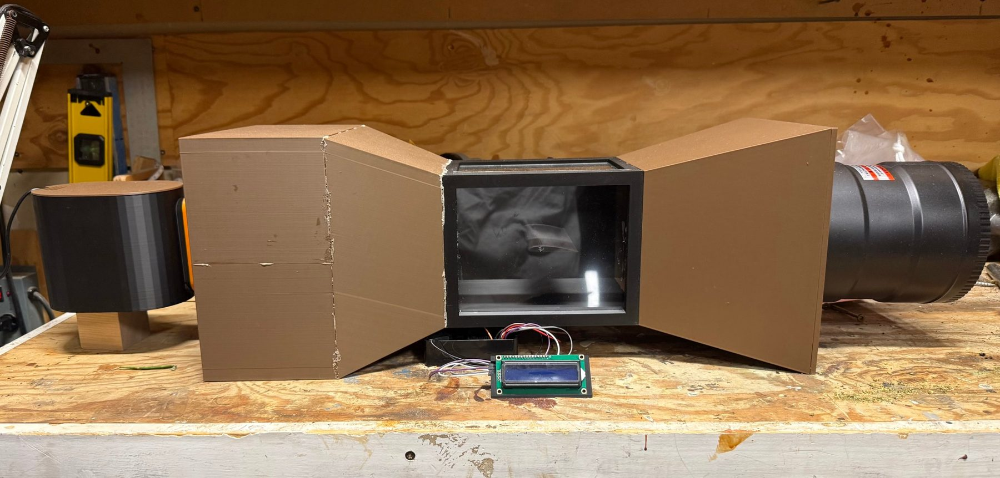
Key takeaways
- Built the whole rig myself. Every section 3D printed in PLA, a Raspberry Pi setting the angle of attack, and a custom mist system for flow visualization.
- The walls were hiding the stall. In free air, lift peaks at CL ≈ 0.87 near 15° and then drops. In my tunnel it keeps climbing through 20°, because the stalled wake blocks so much of the test section that the air squeezing past the airfoil speeds up and adds lift.
- The cause is model size. A 2 in chord fills 40% of a 5 in test section, about twice the usual limit.
- I caught my own CFD mistake with a sanity check. A negative drag result exposed that the solver was integrating forces on the tunnel walls along with the airfoil.
Same airfoil, walls on vs. walls off
Pick an angle of attack. Both runs use the identical mesh and physics, and the only change is the tunnel walls. The lift plot is my MATLAB output from the CFD results at Re ≈ 6,200.
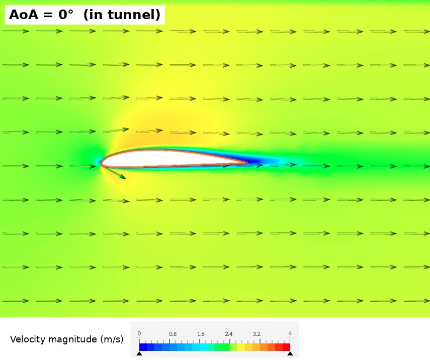
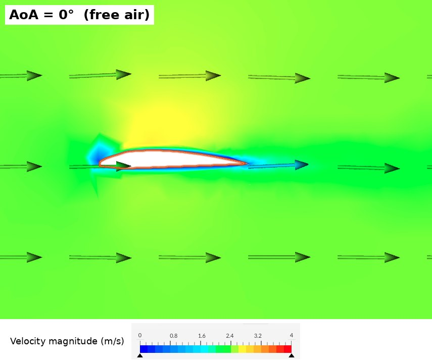
Velocity magnitude, 0 to 4 m/s. Blue is slow, red is fast.
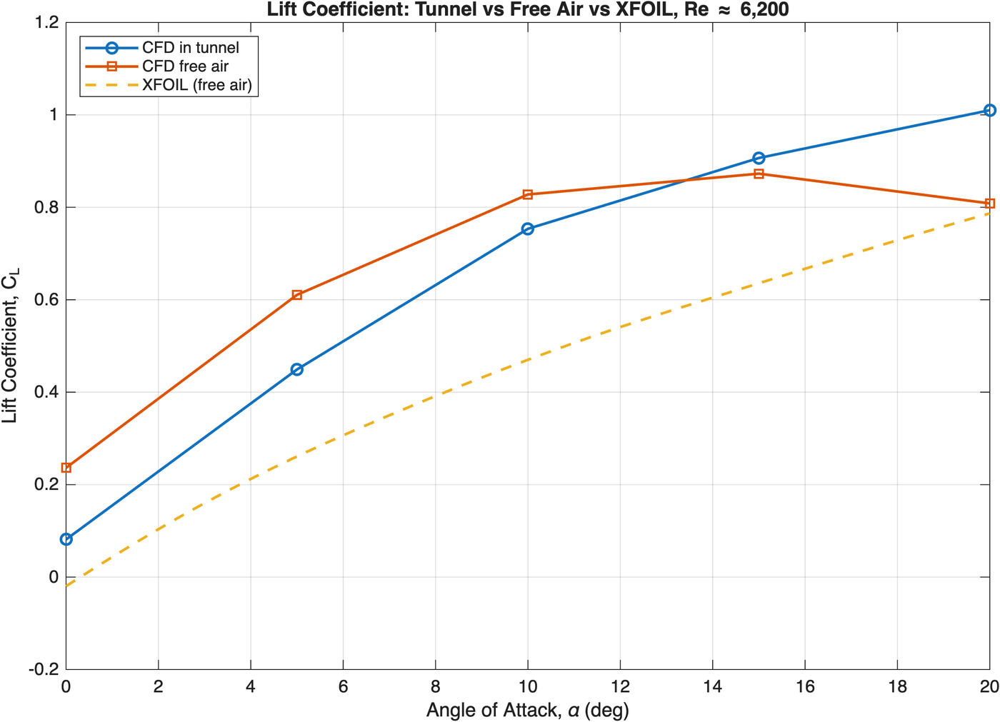
Show the numbers
| AoA | CL tunnel | CL free air | CL XFOIL | ΔCL | CD tunnel | CD free air | L/D tunnel | L/D free air |
|---|
Coefficients are averaged over the last 300 iterations of each run. Free air 10° was still creeping up at the end of the run, so treat it as a lower bound (about 0.84–0.86).
Engineering deep dive
What I did
- Sized the tunnel for a desktop footprint and designed it in SolidWorks xDesign
- Printed about 1.9 kg of PLA on a Bambu Lab P2S, with large sections split in half to fit the printer bed
- Wired a Raspberry Pi, servo, and LCD to set and display the angle of attack
- Ran 10 CFD cases in SimScale and wrote the MATLAB script that turns them into lift and drag coefficients
The call I made
My in-tunnel lift curve kept rising past 20° with no stall. I didn’t accept it, and I didn’t switch to a turbulence model that would converge more nicely but give the wrong physics. I set up a controlled experiment instead, with the same airfoil, mesh, and solver and the walls removed. That isolated the walls as the cause.
Result
- At 0–5° the walls cut lift by ΔCL ≈ 0.16, most likely because thick, slow boundary layers on the side walls weaken the flow near the airfoil
- At 20° they inflate lift 25%, because the stalled wake blocks the test section and the squeezed flow around it speeds up
- The effect flips sign near 13°, which masks the free air stall
- Root cause is a 0.4 chord to height ratio, against typical guidance of about 0.2
Design and build
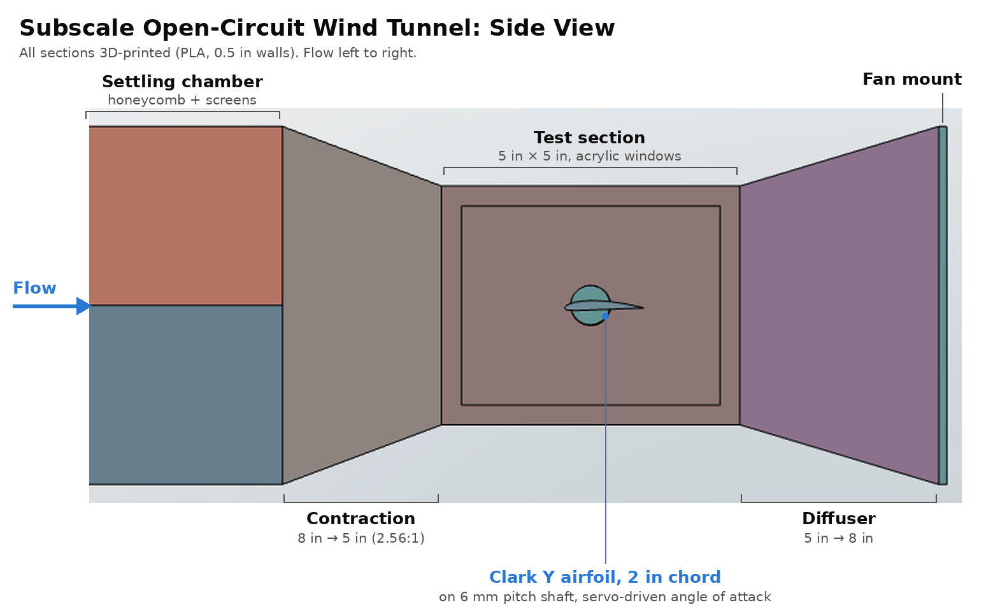
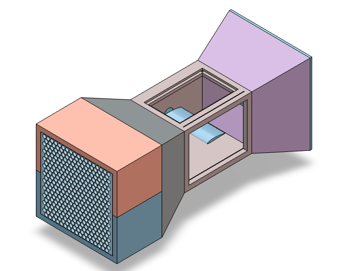
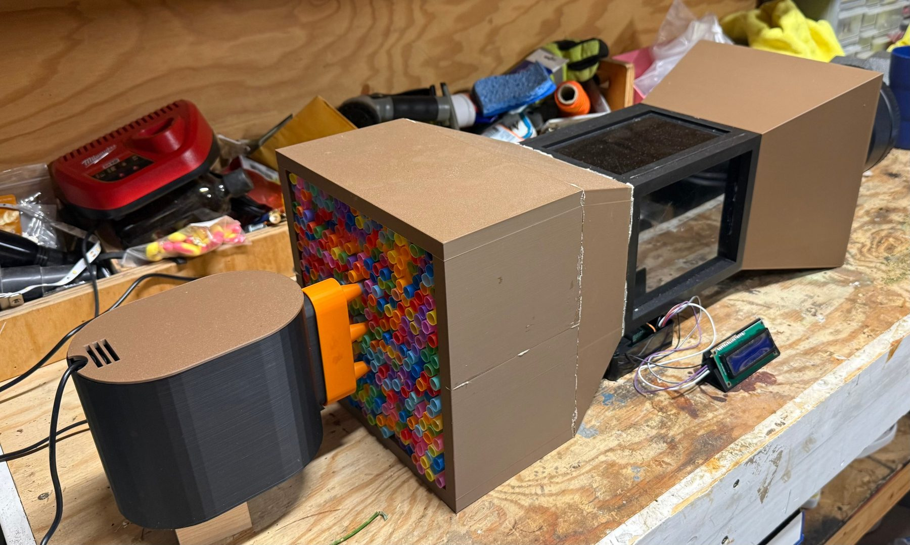
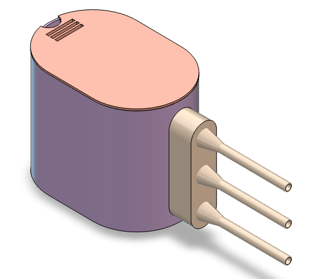
As built
Final all-printed build, 0.5 in walls. Lengths are approximate.
| Section | Cross section | Length |
|---|---|---|
| Settling chamber | 8 × 8 in | ~7 in |
| Contraction | 8 → 5 in | ~4 in |
| Test section | 5 × 5 in | 7.5 in |
| Diffuser | 5 → 8 in | ~6 in |
| Fan | 345 CFM inline duct fan | |
| Total | ~27.5 in | |
Design decisions
A low contraction ratio, on purpose
Textbook tunnels run 6–10 to 1. I took 2.56 to 1 to keep the part short and printable. The lesson I took from it is that speed comes from continuity, V = Q/A. The contraction doesn’t make speed. It makes the flow cleaner by letting the settling chamber run slow.
Suction, not blowing
The fan sits at the back and pulls air through the tunnel, so its swirl and turbulence stay downstream of the test section and the air reaching the airfoil is cleaner.
I should have printed the honeycomb
I used about 400 cut drinking straws as the flow straightener. Cutting and packing them took far more time than I expected, and a 3D printed honeycomb would have been faster and given a cleaner, more uniform result.
The test article
A Clark Y airfoil with a 2 in chord, a classic low speed section with a flat bottom. It spans wall to wall to approximate 2D flow.
Instrumentation
Angle of attack control
A Raspberry Pi 4 runs the servo and the display. I type an angle and the airfoil moves there.
- MG996R metal gear servo on a clamping coupler that drives a 6 mm pitch shaft through the test section wall into the airfoil
- Calibration step that levels the chord and saves that zero, so it survives restarts
- Live LCD readout of the commanded angle in a printed stand, so the angle shows in every photo and video
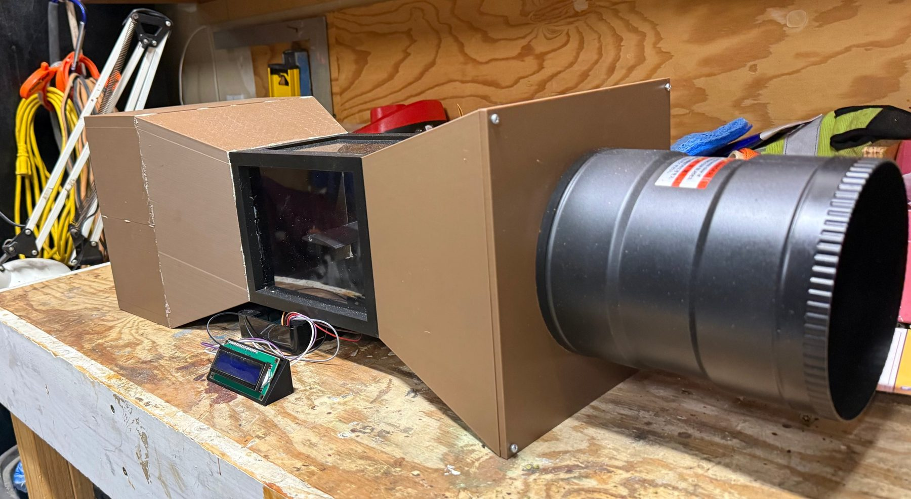
Measuring the real airspeed
No pitot tube yet, so I filmed a smoke puff at 240 fps crossing a known 5 in of the test section at full fan power.
Air properties at about 1,800 m elevation are ρ ≈ 0.97 kg/m³ and ν ≈ 1.87×10−5 m²/s.
below my design Reynolds number of 40,000–60,000
- A 345 CFM fan should give about 10 m/s through a 5 in section. I measured 2.3.
- The likely losses are the straws, the fan curve under load, and leaks where filler cracked at the contraction joints.
- The lesson is that Reynolds number comes from the fan, the losses, and the leaks, not the fan’s CFM rating. Measure it early.
Flow visualization
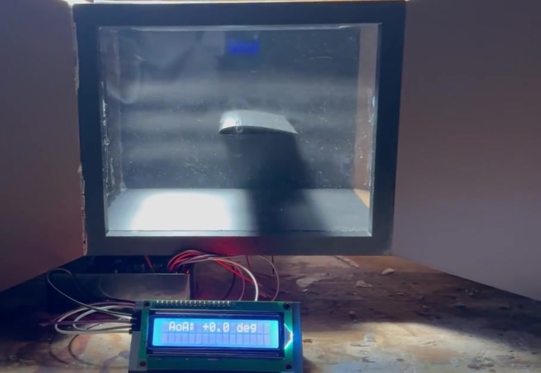
Stills from the sweep, one per angle. The LCD in the foreground shows the commanded angle. Qualitative only.
What the smoke can and can’t tell me
The mist visibly deflects around the airfoil through the sweep, but it’s diffuse and lit from above. It shows the flow qualitatively and doesn’t validate the CFD.
Next version
- A small fan on the mist box lid to push the fog in at about inlet speed
- A light sheet through a mid-span slit, with the camera square to the window on a tripod
CFD method
Setup
| Solver | SimScale, incompressible, steady, laminar |
|---|---|
| Inlet and outlet | 2.3 m/s velocity inlet, 0 Pa gauge outlet |
| In tunnel | 5 × 5 in channel, all four walls no-slip |
| Free air | ±10 chords tall with slip side faces. Chord to height drops from 0.40 to 0.05 |
| Mesh | ~3.5M cells. 5 inflation layers, 0.05 mm first layer, ~100 cells per surface along the chord |
| Iterations | 1,000 per run, 2,000 for the slower free air cases |
| Angles | 0, 5, 10, 15, 20° in both domains |
Why laminar
At Re ≈ 6,200 the boundary layer stays laminar. Transition on an airfoil typically happens around 105, and XFOIL predicted none anywhere on the surface. A RANS model like k-ω SST would add artificial eddy viscosity, delay separation, and over-predict lift near stall. Laminar was harder to converge, so I kept it and documented the limits.
Mistakes I caught
- Negative dragFixed
First results showed −0.006 N of drag and 4× too much skin friction. The force calculation was integrating all six tunnel faces along with the airfoil. I rebuilt every run with forces on the airfoil only.
- Cutting runs shortAvoided
Drag settled by iteration 200 but lift drifted until 700. Cutting runs to 400 would have under-predicted lift by about 4%.
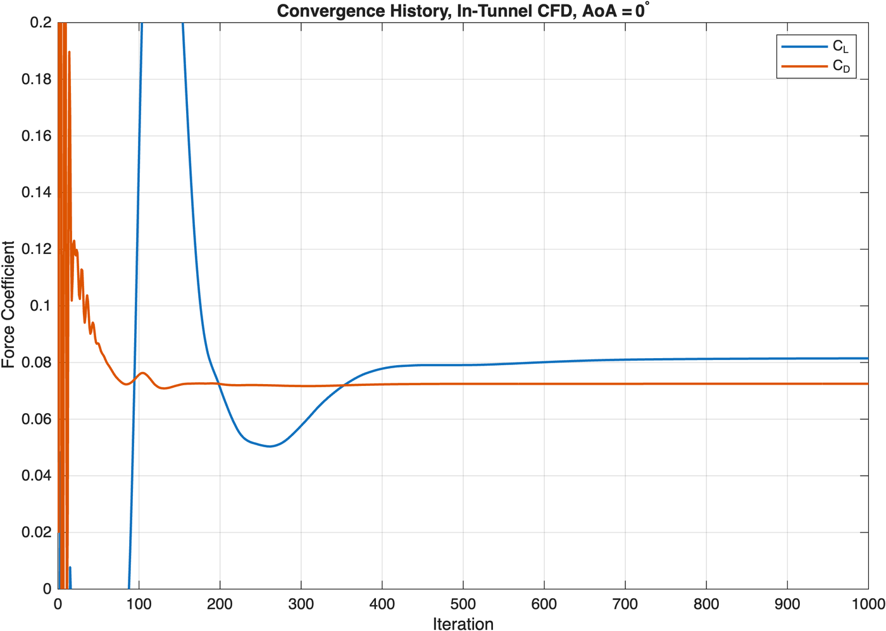
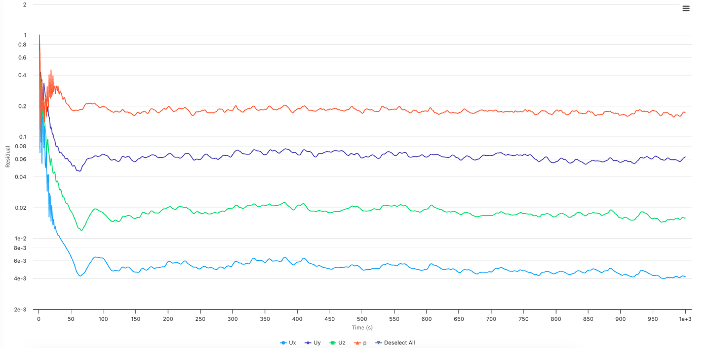
Results
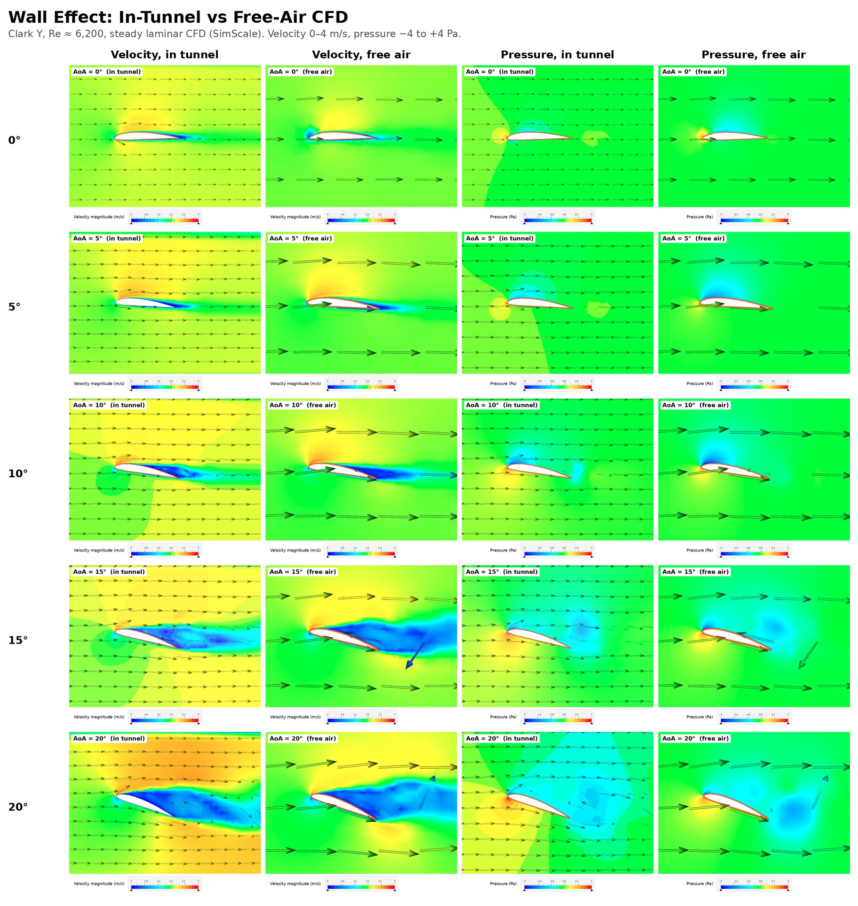
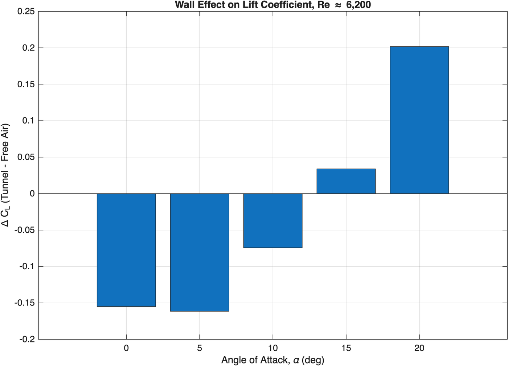
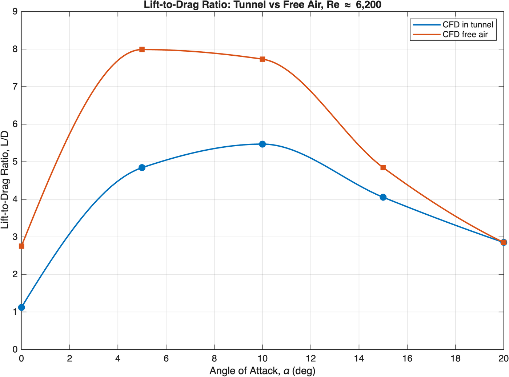
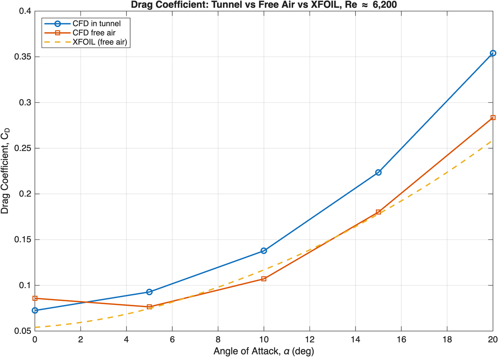
Why the walls change lift
Low angles, less lift. At this low Reynolds number the boundary layers on the no-slip side walls are thick and slow, and they meet the airfoil at both ends. That most likely weakens the flow over the airfoil. In free air those faces are slip, and the loss disappears.
High angles, more lift. At 20° the airfoil fills about 18% of the test section height, and its stalled wake fills more. The air has to squeeze through the gaps, so it speeds up. Force scales with velocity squared, so lift goes up and the stall disappears.
What it means
Low Reynolds number is a different world
The boundary layer stays fully laminar and separation starts near 10°. Camber barely helps at 0° (CL 0.24 in free air vs. about 0.35 for a Clark Y at high Re), the stall is soft, and best L/D is about 8 instead of 50+.
A test rig can lie to you
Without the free air runs, I would have reported an airfoil that doesn’t stall by 20°. The walls changed the answer, so the model has to be sized to the tunnel, or the results need wall corrections.
CFD vs. XFOIL
Same trends, with near zero lift at 0°, a reduced lift slope, and a soft stall. CFD predicts more lift even in free air, which fits XFOIL’s known weakness below Re ≈ 104.
Limits, lessons, and what’s next
Limits I’m upfront about
The tunnel has no force balance or pressure taps, so every lift and drag number here is CFD. The steady solver time-averages unsteady flow at 10–20°, and my transient run at 15° didn’t complete. One mesh, no grid independence study. The 5° spacing brackets the free air stall at about 12–15°. Airspeed comes from one method, smoke timing.
Lessons
Size the model to the tunnel, with a chord to height ratio of 0.2 or less. Measure the real speed early and seal every joint. Sanity check CFD against physics and geometry before trusting it. Judge convergence on the number you care about, not just residuals. Pick the correct physics even when it converges worse.
Next
A 1 in chord or a taller test section to cut the interference. A printed honeycomb in place of the straws. A pitot-static tube with a differential pressure sensor on the Pi for live airspeed. A load cell force balance to check the CFD directly. Transient CFD and a mesh study near stall, with finer angle spacing from 12° to 18°.